Relaxed Poisson Distribution#
Hadi’s version: https://openreview.net/forum?id=ektPEcqGLb
Poisson args#
You need to provide two things:
log_rate: log of firing rates (real numbers)temp: non-negative temperature (temp=0.0corresponds to true Poisson)n_exp: number of exponential draws (integer)
Note: See Algorithm 1 here: https://openreview.net/pdf?id=ektPEcqGLb
n_expis the same as the one shown in therelog_rateis just \(\log\mathbf{\lambda}\)
from main.distributions import Poisson
Make Poisson dists#
# firing rates
lamb = torch.tensor([0.5, 1, 2, 8])
# number of exponential draws
n_exp = 200
# various temperatures
temperatures = [
0.0, 0.01, 0.05, 0.1, 0.2, 0.3,
0.4, 0.5, 0.6, 0.7, 0.8, 0.9, 1.0,
]
# keywords
kws = dict(
log_rate=torch.log(lamb),
clamp=None,
n_exp=n_exp,
)
# dictionary of distributions (various temperatures)
dists = {
t: Poisson(temp=t, **kws)
for t in temperatures
}
Draw samples#
n_samples = int(1e5)
samples = collections.defaultdict(list)
for _ in tqdm(range(n_samples)):
for t, dist in dists.items():
samples[t].append(dist.rsample())
samples = {
t: tonp(torch.stack(s).T)
for t, s in samples.items()
}
100%|█████████████████████████████████| 100000/100000 [00:48<00:00, 2042.95it/s]
Put data as dataframe#
df = []
for t, samp in samples.items():
for i, s in enumerate(samp):
df.append({
'Temperature': [t] * len(s),
'lamb': [tonp(lamb)[i]] * len(s),
'index': np.arange(len(s)),
'sample': s,
})
df = pd.DataFrame(merge_dicts(df))
len(df) / n_samples / len(lamb) / len(temperatures)
1.0
Plot#
muted = sns.color_palette('muted')
muted
# color palette
pal_temp = {
0.0: 'k',
0.01: muted[2],
0.1: muted[3],
1.0: muted[0],
}
# binning
upper = 5
n_bins = 50
width = upper / n_bins
bins = np.linspace(0, upper + width, n_bins + 3)
bins -= 3 * width / 2
fig, ax = create_figure(1, 1, (3.5, 2.2), dpi=200)
d2p = df.loc[
(df['lamb'] == 1.0) &
(df['Temperature'].isin(pal_temp))
]
sns.histplot(
d2p,
x='sample',
hue='Temperature',
bins=bins,
palette=pal_temp,
alpha=0.9,
stat='percent',
element='step',
fill=False,
hue_order=[1.0, 0.1, 0.01, 0.0],
ax=ax,
)
ax.set(xlabel='', ylabel='')
legend = ax.get_legend()
for text in legend.get_texts():
text.set_text(f"T = {text.get_text()}")
# fig.savefig(pjoin(fig_dir, 'samples_hist.pdf'), **kws_fig)
plt.show()
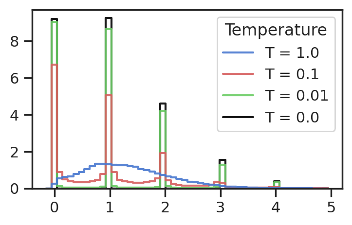
The effect of temperature on step function#
In Algorithm 1, we have this step:
\(\mathrm{indicator} \gets \text{sigmoid}\left(\frac{1 - \mathrm{times}}{\mathrm{temperature}}\right)\)
This is just approximating the Heaviside step function. Let’s see how it looks like for various nonzero temperatures.
Define functions#
def step_function(x):
return np.where(x >= 0, 1, 0)
def sigmoid(x, t=1.0):
return 1 / (1 + np.exp(-x / t))
Make plots#
x = np.linspace(-10, 10, 10000)
plt.figure(figsize=(10, 6))
plt.plot(x, step_function(x), label='Step Function', color='black', lw=2, ls='--')
temperatures = [1, 0.5, 0.1, 0.05]
colors = ['purple', 'green', 'blue', 'red']
for t, c in zip(temperatures, colors):
plt.plot(x, sigmoid(x, t), label=f'Sigmoid, t={t}', color=c)
plt.title('Step Function and Sigmoid Approximations')
plt.xlabel('x')
plt.ylabel('y')
plt.legend()
plt.grid(True)
plt.show()
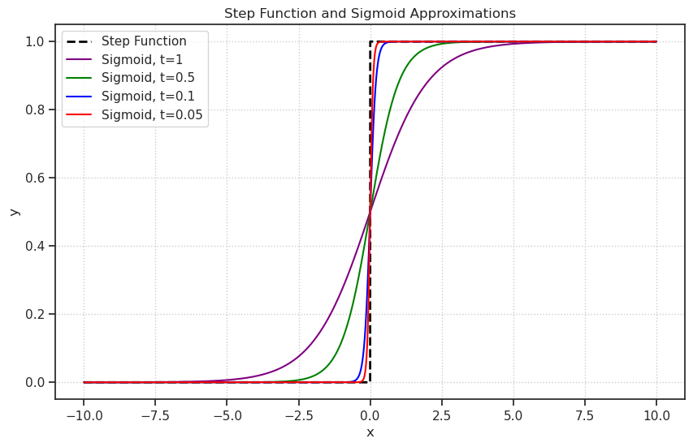
x = np.linspace(-2, 2, 10000)
plt.figure(figsize=(8, 6))
plt.plot(x, step_function(x), label='Step Function', color='black', lw=2, ls='--')
temperatures = [1, 0.5, 0.1, 0.05]
colors = ['purple', 'green', 'blue', 'red']
for t, c in zip(temperatures, colors):
plt.plot(x, sigmoid(x, t), label=f'Sigmoid, t={t}', color=c)
plt.title('Step Function and Sigmoid Approximations (Zoom in)')
plt.xlabel('x')
plt.ylabel('y')
plt.legend()
plt.grid(True)
plt.show()
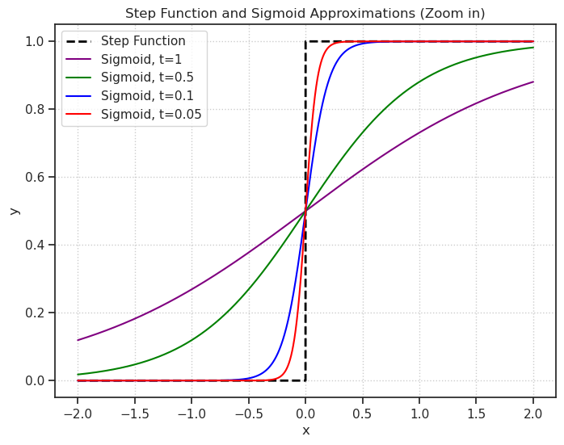
Wait, was the old method faster?#
from base.utils_model import *
dists.Distribution.set_default_validate_args(False)
class Poisson:
def __init__(
self,
log_rate: torch.Tensor,
temp: float = 0.0,
clamp: float | None = None,
n_exp: int | str = 'infer',
n_exp_p: float = 1e-3,
):
assert temp >= 0.0, f"must be non-neg: {temp}"
self.temp = temp
self.clamp = clamp
# setup rate & exp dist
if clamp is not None:
log_rate = softclamp_upper(
log_rate, clamp)
eps = torch.finfo(torch.float32).eps
self.rate = torch.exp(log_rate) + eps
self._exp = dists.Exponential(self.rate)
# compute n_exp
if n_exp == 'infer':
max_rate = self.rate.max().item()
n_exp = compute_n_exp(max_rate, n_exp_p)
self.n_exp = int(n_exp)
def __repr__(self):
parts = [
f"rate: {self.rate.shape}",
f"temp: {self.temp}",
f"n_exp: {self.n_exp}",
]
return f"Poisson({', '.join(parts)})"
@property
def mean(self):
return self.rate
@property
def variance(self):
return self.rate
# noinspection PyTypeChecker
def rsample(self):
if self.temp == 0.0:
return self.sample()
x = self._exp.rsample((self.n_exp,)) # inter-event times
times = torch.cumsum(x, dim=0) # arrival t of events
indicator = torch.sigmoid( # events within [0, 1]
(1 - times) / self.temp)
z = indicator.sum(0).float() # event counts
return z
def rsample_old(self, hard: bool = False):
x = self._exp.rsample((self.n_exp,)) # inter-event times
times = torch.cumsum(x, dim=0) # arrival times of events
indicator = times < 1.0
z_hard = indicator.sum(0).float()
if self.temp > 0:
indicator = torch.sigmoid(
(1.0 - times) / self.temp)
z = indicator.sum(0).float()
else:
z = z_hard
if hard:
return z + (z_hard - z).detach()
return z
@torch.no_grad()
def sample(self):
return torch.poisson(self.rate).float()
def log_prob(self, samples: torch.Tensor):
return (
- self.rate
- torch.lgamma(samples + 1)
+ samples * torch.log(self.rate)
)
Test: CPU#
lamb = torch.tensor([0.5, 1, 2, 8])
pois = Poisson(
log_rate=torch.log(lamb),
n_exp=1000,
temp=0.1,
)
%timeit pois.rsample()
99.3 µs ± 128 ns per loop (mean ± std. dev. of 7 runs, 10,000 loops each)
%timeit pois.rsample_old()
113 µs ± 96.8 ns per loop (mean ± std. dev. of 7 runs, 10,000 loops each)
Test: GPU#
pois = Poisson(
log_rate=torch.log(lamb).cuda(),
n_exp=1000,
temp=0.1,
)
%timeit pois.rsample()
73.5 µs ± 7.64 ns per loop (mean ± std. dev. of 7 runs, 10,000 loops each)
%timeit pois.rsample_old()
84.3 µs ± 79.3 ns per loop (mean ± std. dev. of 7 runs, 10,000 loops each)
No, the new version is faster
Apporox density#
import torch
import torch.nn.functional as F
from torch import distributions as dists
import numpy as np
import matplotlib.pyplot as plt
import seaborn as sns
from tqdm import tqdm
import scipy.stats as sp_stats # Needed for compute_n_exp
# --- 1. Your Poisson Class & Helpers ---
def compute_n_exp(rate: float, p: float = 1e-6):
assert rate > 0.0, f"must be positive, got: {rate}"
pois = sp_stats.poisson(rate)
n_exp = pois.ppf(1.0 - p)
return int(n_exp)
def softclamp_upper(x: torch.Tensor, c: float):
return c - F.softplus(c - x)
class Poisson:
def __init__(self, log_rate: torch.Tensor, temp: float = 0.0, clamp=None, n_exp='infer', n_exp_p=1e-3):
self.temp = temp
if clamp is not None:
log_rate = softclamp_upper(log_rate, clamp)
eps = torch.finfo(torch.float32).eps
self.rate = torch.exp(log_rate) + eps
self._exp = dists.Exponential(self.rate)
if n_exp == 'infer':
max_rate = self.rate.max().item()
n_exp = compute_n_exp(max_rate, n_exp_p)
self.n_exp = int(n_exp)
def rsample(self):
if self.temp == 0.0: return self.sample()
x = self._exp.rsample((self.n_exp,))
times = torch.cumsum(x, dim=0)
indicator = torch.sigmoid((1 - times) / self.temp)
z = indicator.sum(0).float()
return z
@torch.no_grad()
def sample(self):
return torch.poisson(self.rate).float()
# --- 2. The Analytical Approximation (Poisson-Logistic Mixture) ---
def log_prob_mixture(z, rate, temp, margin=10):
"""
Computes log_prob using a Poisson-Logistic Mixture approximation.
p(z) ~ Sum_k Poisson(k|rate) * Logistic(z|loc=k, scale=temp)
"""
# Ensure inputs are tensors
if not isinstance(z, torch.Tensor): z = torch.tensor(z)
if not isinstance(rate, torch.Tensor): rate = torch.tensor(rate)
# 1. Define the range of k values to sum over relative to z
# shifts: [M]
shifts = torch.arange(-margin, margin + 1, device=z.device)
# Expand z to [1, ...] to broadcast with shifts [M, ...]
z_expanded = z.unsqueeze(0)
# k_centers: [M, ...]
# We broaden dimensions of shifts to match z_expanded's rank
shifts_view = shifts.view(-1, *([1] * z.dim()))
k_centers = z_expanded.floor() + shifts_view
# 2. Compute Log-Weights (Poisson PMF)
mask_valid = k_centers >= 0
k_safe = k_centers.clamp(min=0)
# Handle rate broadcasting. If rate is scalar, it works automatically.
# If rate matches z shape, we unsqueeze it to match z_expanded.
rate_expanded = rate.unsqueeze(0) if rate.dim() == z.dim() else rate
log_weights = (
k_safe * torch.log(rate_expanded)
- rate_expanded
- torch.lgamma(k_safe + 1)
)
# Mask invalid k (k < 0)
log_weights = torch.where(mask_valid, log_weights, torch.tensor(-float('inf'), device=z.device))
# 3. Compute Log-Kernels (Logistic PDF)
# y = (z - k) / temp
diff = z_expanded - k_centers
y = diff / temp
# Logistic Log PDF: -log(s) - y - 2*softplus(-y)
log_kernels = -np.log(temp) - y - 2.0 * F.softplus(-y)
# 4. Combine and Sum over the mixture dimension (dim 0)
total_log_prob = torch.logsumexp(log_weights + log_kernels, dim=0)
return total_log_prob
# --- 3. Plotting Code ---
lamb = torch.tensor([20.0])
temperatures = [0.1, 0.5, 1.0]
n_samples = 20000
# Setup Plot: Shared Y-axis for columns
fig, axes = plt.subplots(nrows=2, ncols=len(temperatures),
figsize=(3.5 * len(temperatures), 6),
sharey='col', sharex=True, constrained_layout=True)
print("Running simulations...")
for col_idx, temp in enumerate(tqdm(temperatures)):
# --- A. Empirical Sampling ---
# Use batching for speed
dist_batch = Poisson(torch.log(lamb.expand(1000)), temp=temp)
batch_samples = [dist_batch.rsample() for _ in range(n_samples // 1000)]
s = torch.stack(batch_samples).flatten().numpy()
# Plot Histogram (Row 0)
ax_hist = axes[0, col_idx]
sns.histplot(s, bins=50, stat='density', element='step',
color='teal', alpha=0.5, ax=ax_hist, label='Empirical')
ax_hist.set_title(f"Empirical (T={temp})")
# --- B. Analytical Curve (Row 1) ---
ax_theo = axes[1, col_idx]
# Create grid for analytical PDF
z_min, z_max = s.min(), s.max()
z_grid = torch.linspace(z_min, z_max, 500)
# Compute PDF
log_probs = relaxed_poisson_log_prob(z_grid, lamb[0], temp, margin=10)
pdf = torch.exp(log_probs).detach().cpu().numpy()
# Plot Curve
# FIX: pdf might be shape (1, 500), so we flatten it
ax_theo.plot(z_grid.numpy(), pdf.flatten(), color='firebrick', lw=2, label='Mixture Approx')
ax_theo.fill_between(z_grid.numpy(), pdf.flatten(), color='firebrick', alpha=0.1)
ax_theo.set_title(f"Analytical (T={temp})")
ax_theo.set_xlabel("z")
axes[0, 0].set_ylabel("Density")
axes[1, 0].set_ylabel("Density")
plt.suptitle(f"Relaxed Poisson: Empirical vs. Analytical (Rate={lamb.item()})", y=1.05)
plt.show()
Running simulations...
100%|█████████████████████████████████████████████| 3/3 [00:00<00:00, 21.53it/s]
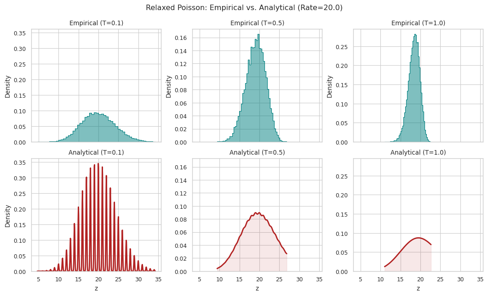
import torch
import torch.nn.functional as F
import numpy as np
def relaxed_poisson_log_prob(z, rate, temp, margin=10):
"""
Computes log_prob of the Relaxed Poisson using a Gaussian Mixture approximation.
The density is modeled as:
p(z) = sum_k Poisson(k|rate) * Normal(z | mean=k, std=temp)
This smooths the singularities at integers while preserving the
correct probability mass and temperature dependence.
Args:
z: [B, K] Sampled relaxed counts.
rate: [B, K] Poisson rate parameters (lambda).
temp: float, the relaxation temperature (serves as Gaussian std).
margin: int, number of neighbors to sum over (truncation for efficiency).
"""
# Ensure inputs are tensors
if not isinstance(z, torch.Tensor): z = torch.tensor(z)
if not isinstance(rate, torch.Tensor): rate = torch.tensor(rate)
# 1. Define the range of k values to sum over: [floor(z) - margin, ..., floor(z) + margin]
# We use a window around z for efficiency, as the Gaussian probability vanishes far away.
shifts = torch.arange(-margin, margin + 1, device=z.device)
# Expand z to allow broadcasting with the shifts
# z: [Batch, Dim] -> z_expanded: [1, Batch, Dim]
z_expanded = z.unsqueeze(0)
# k_centers: [2*margin+1, Batch, Dim]
# The integer centers for the mixture components
k_centers = z_expanded.floor() + shifts.view(-1, *([1] * z.dim()))
# 2. Compute Log-Weights (Poisson PMF)
# log P(k|lambda) = k*log(lam) - lam - lgamma(k+1)
# Valid k must be >= 0. We mask invalid indices later.
k_safe = k_centers.clamp(min=0)
# Handle rate broadcasting
rate_expanded = rate.unsqueeze(0) if rate.dim() == z.dim() else rate
log_weights = (
k_safe * torch.log(rate_expanded)
- rate_expanded
- torch.lgamma(k_safe + 1)
)
# Mask invalid k (k < 0) with -inf
mask_valid = k_centers >= 0
log_weights = torch.where(mask_valid, log_weights, torch.tensor(-float('inf'), device=z.device))
# 3. Compute Log-Kernels (Gaussian PDF)
# log N(z; k, temp) = -0.5 * ((z - k)/temp)^2 - log(temp) - 0.5 * log(2pi)
diff = z_expanded - k_centers
# The width of the kernel is set to 'temp'
sigma = temp
log_kernels = -0.5 * (diff / sigma)**2 - np.log(sigma) - 0.5 * np.log(2 * np.pi)
# 4. Combine and Sum (LogSumExp mixture)
# log p(z) = LogSumExp( log_weight + log_kernel )
total_log_prob = torch.logsumexp(log_weights + log_kernels, dim=0)
return total_log_prob
import math
import torch
import torch.nn.functional as F
from torch import distributions as dists
dists.Distribution.set_default_validate_args(False)
def compute_n_exp(rate: float, p: float = 1e-6):
assert rate > 0.0, f"must be positive, got: {rate}"
pois = sp_stats.poisson(rate)
n_exp = pois.ppf(1.0 - p)
return int(n_exp)
def softclamp_upper(x: torch.Tensor, c: float):
return c - F.softplus(c - x)
class Poisson:
"""
- temp == 0: exact discrete Poisson with torch.poisson sampling and log pmf.
- temp > 0: your relaxed rsample; log_prob approximated by saddlepoint on the
infinite-process relaxed distribution:
Z_tau = sum_{events} sigmoid((1 - T_i)/tau)
with {T_i} the event times of a Poisson process of rate lambda.
Notes:
- The saddlepoint log_prob is a continuous log density (log pdf), not a log pmf.
- It is intended as a mitigation: a usable, differentiable likelihood surrogate.
"""
def __init__(
self,
log_rate: torch.Tensor,
temp: float = 0.0,
clamp: float | None = None,
n_exp: int | str = "infer",
n_exp_p: float = 1e-3,
# new knobs for log_prob(temp>0)
sp_n_quad: int = 256,
sp_quad_power: float = 4.0,
sp_newton_steps: int = 12,
sp_step_clip: float = 5.0,
sp_s_clip: float = 80.0,
sp_eps: float = 1e-12,
):
assert temp >= 0.0, f"must be non-neg: {temp}"
self.temp = float(temp)
self.clamp = clamp
# knobs for saddlepoint log_prob
self.sp_n_quad = int(sp_n_quad)
self.sp_quad_power = float(sp_quad_power)
self.sp_newton_steps = int(sp_newton_steps)
self.sp_step_clip = float(sp_step_clip)
self.sp_s_clip = float(sp_s_clip)
self.sp_eps = float(sp_eps)
# setup rate & exp dist
if clamp is not None:
log_rate = softclamp_upper(log_rate, clamp)
eps = torch.finfo(torch.float32).eps
self.rate = torch.exp(log_rate) + eps
self._exp = dists.Exponential(self.rate)
# compute n_exp for your finite sampler
if n_exp == "infer":
max_rate = self.rate.max().item()
n_exp = compute_n_exp(max_rate, n_exp_p)
self.n_exp = int(n_exp)
# precompute quadrature grid for CGF integrals if temp > 0
self._quad_y = None
self._quad_w = None
self._y0 = None
if self.temp > 0.0:
self._setup_cgf_quadrature()
def __repr__(self):
parts = [
f"rate: {self.rate.shape}",
f"temp: {self.temp}",
f"n_exp: {self.n_exp}",
]
return f"Poisson({', '.join(parts)})"
@property
def mean(self):
return self.rate
@property
def variance(self):
return self.rate
def rsample(self):
if self.temp == 0.0:
return self.sample()
x = self._exp.rsample((self.n_exp,)) # inter-event times
times = torch.cumsum(x, dim=0) # arrival times
indicator = torch.sigmoid((1 - times) / self.temp)
z = indicator.sum(0).float()
return z
@torch.no_grad()
def sample(self):
return torch.poisson(self.rate).float()
def log_prob(self, samples: torch.Tensor):
"""
API-compatible behavior:
- temp == 0: discrete Poisson log pmf (exact).
- temp > 0: relaxed continuous log pdf (saddlepoint approximation).
"""
if self.temp == 0.0:
return self._log_prob_poisson_pmf(samples)
return self._log_prob_relaxed_saddlepoint(samples)
def _log_prob_poisson_pmf(self, samples: torch.Tensor):
# Your original code:
return (-self.rate - torch.lgamma(samples + 1) + samples * torch.log(self.rate))
# ----------------------------
# Relaxed log_prob machinery
# ----------------------------
def _setup_cgf_quadrature(self):
"""
CGF representation (infinite-process relaxed distribution):
K(s) = log E[exp(s Z)] = lambda * tau * ∫_0^{y0} (exp(s y) - 1) / (y(1-y)) dy
where y0 = sigmoid(1/tau).
Numerics:
- Use a change of variable that concentrates points near y0 (important when tau is small and y0 ~ 1).
Let u in (0,1), y(u) = y0 * (1 - (1-u)^p), p > 1.
Then dy = y0 * p * (1-u)^(p-1) du.
- Midpoint rule on u is simple and stable; you can increase sp_n_quad if needed.
"""
device = self.rate.device
dtype = torch.float64 # do CGF numerics in float64 for stability
tau = float(self.temp)
y0 = torch.sigmoid(torch.tensor(1.0 / tau, device=device, dtype=dtype))
self._y0 = y0 # scalar tensor
N = self.sp_n_quad
p = self.sp_quad_power
# midpoint grid in u
u = (torch.arange(N, device=device, dtype=dtype) + 0.5) / N # (N,)
# cluster near u=1 hence near y=y0
y = y0 * (1.0 - (1.0 - u).pow(p)) # (N,)
dy_du = y0 * p * (1.0 - u).pow(p - 1.0) # (N,)
w = dy_du * (1.0 / N) # (N,)
# store as float64; broadcast later
self._quad_y = y
self._quad_w = w
def _cgf_K_Kp_Kpp(self, s: torch.Tensor):
"""
Compute K(s), K'(s), K''(s) for each element of s (same shape as rate).
Uses precomputed quadrature over y in (0, y0).
Shapes:
- s: [B, K] (or broadcastable)
- returns K, Kp, Kpp: [B, K]
"""
assert self.temp > 0.0
assert self._quad_y is not None and self._quad_w is not None
# cast to float64 for stability
s64 = s.to(dtype=torch.float64)
lam64 = self.rate.to(dtype=torch.float64)
tau64 = torch.tensor(self.temp, device=s.device, dtype=torch.float64)
y = self._quad_y[:, None, None] # [N,1,1]
w = self._quad_w[:, None, None] # [N,1,1]
# exp(s*y) and expm1(s*y) computed in float64
sy = s64[None, :, :] * y
exp_sy = torch.exp(sy) # [N,B,K]
expm1_sy = torch.expm1(sy) # [N,B,K]
# K integrand: (exp(sy)-1) / (y(1-y))
denom = y * (1.0 - y) # [N,1,1]
K_int = (expm1_sy / denom) # [N,B,K]
# K'(s) integrand: exp(sy) / (1-y)
Kp_int = exp_sy / (1.0 - y)
# K''(s) integrand: y * exp(sy) / (1-y)
Kpp_int = y * exp_sy / (1.0 - y)
# integrate over y and multiply lambda*tau
K = (lam64 * tau64) * torch.sum(w * K_int, dim=0) # [B,K]
Kp = (lam64 * tau64) * torch.sum(w * Kp_int, dim=0) # [B,K]
Kpp = (lam64 * tau64) * torch.sum(w * Kpp_int, dim=0) # [B,K]
return K, Kp, Kpp
def _relaxed_moments(self):
"""
Analytic mean/var implied by the same CGF (infinite-process relaxed dist).
mu = lambda * tau * log(1/(1-y0))
var = lambda * tau * (log(1/(1-y0)) - y0)
"""
assert self.temp > 0.0
lam64 = self.rate.to(dtype=torch.float64)
tau64 = torch.tensor(self.temp, device=self.rate.device, dtype=torch.float64)
y0 = self._y0 # float64 scalar tensor
log_term = torch.log(1.0 / (1.0 - y0))
mu = lam64 * tau64 * log_term
var = lam64 * tau64 * (log_term - y0)
return mu, var
def _solve_saddlepoint_s(self, z: torch.Tensor):
"""
Solve K'(s) = z for s using damped Newton steps (vectorized).
z must be positive.
"""
z64 = z.to(dtype=torch.float64)
mu, var = self._relaxed_moments()
# initial guess: s0 ~ (z - mu)/var (like Gaussian tilt)
s = (z64 - mu) / (var + self.sp_eps)
# clip initial s to reasonable range
s = torch.clamp(s, -self.sp_s_clip, self.sp_s_clip)
for _ in range(self.sp_newton_steps):
_, Kp, Kpp = self._cgf_K_Kp_Kpp(s)
# Newton step: s <- s - (Kp - z)/Kpp
step = (Kp - z64) / (Kpp + self.sp_eps)
# damp/clip step to avoid overshoot
step = torch.clamp(step, -self.sp_step_clip, self.sp_step_clip)
s = s - step
# keep s in a safe numeric range
s = torch.clamp(s, -self.sp_s_clip, self.sp_s_clip)
return s
def _log_prob_relaxed_saddlepoint(self, samples: torch.Tensor):
"""
Saddlepoint approximation of continuous log pdf for relaxed distribution.
log p(z) ≈ K(s*) - s* z - 0.5 log(2π K''(s*))
where s* solves K'(s*) = z.
"""
z = samples
# For a continuous density, z must be > 0. If z <= 0, return -inf.
neg_inf = torch.tensor(-float("inf"), device=z.device, dtype=z.dtype)
valid = z > 0
z_safe = torch.where(valid, z, torch.ones_like(z) * 1e-6)
s_star = self._solve_saddlepoint_s(z_safe)
K, _, Kpp = self._cgf_K_Kp_Kpp(s_star)
z64 = z_safe.to(dtype=torch.float64)
log_pdf64 = K - s_star * z64 - 0.5 * torch.log(2.0 * math.pi * (Kpp + self.sp_eps))
log_pdf = log_pdf64.to(dtype=z.dtype)
log_pdf = torch.where(valid, log_pdf, neg_inf)
return log_pdf
import math
import torch
import matplotlib.pyplot as plt
# If your compute_n_exp uses SciPy, make sure that's available.
# Otherwise set n_exp manually in the Poisson constructor for this test.
@torch.no_grad()
def run_relaxed_poisson_diagnostics(
lambdas=(0.2, 0.5, 1.0, 2.0, 5.0, 10.0, 20.0),
temps=(0.05, 0.1, 0.2, 0.5),
n_samples=200_000,
n_exp="infer", # or an int like 256/512 if you want to test truncation sensitivity
n_exp_p=1e-5, # tighten if you want the finite sampler closer to the infinite-process surrogate
device="cuda:0",
seed=0,
):
torch.manual_seed(seed)
for tau in temps:
for lam in lambdas:
# Build a batch of size n_samples with K=1 so we can histogram easily.
log_rate = torch.full((n_samples, 1), math.log(lam), device=device)
dist = Poisson(
log_rate=log_rate,
temp=float(tau),
n_exp=n_exp,
n_exp_p=float(n_exp_p),
# You can tune these if needed:
sp_n_quad=256,
sp_quad_power=4.0,
sp_newton_steps=12,
)
# 1) Monte Carlo samples (relaxed)
z = dist.rsample().squeeze(-1) # [n_samples]
# 2) Moment check: compare MC moments vs CGF-implied moments
# (dist._relaxed_moments is float64 and shaped [n_samples,1], but lambda is constant)
mu_theory, var_theory = dist._relaxed_moments()
mu_theory = mu_theory[0, 0].item()
var_theory = var_theory[0, 0].item()
mu_mc = z.mean().item()
var_mc = z.var(unbiased=True).item()
print(f"(lambda={lam:>6.2f}, tau={tau:>5.2f}) "
f"MC mean={mu_mc:.4f}, theory mean={mu_theory:.4f} | "
f"MC var={var_mc:.4f}, theory var={var_theory:.4f} | "
f"n_exp={dist.n_exp}")
# 3) Histogram vs predicted pdf curve
# Choose plotting range from quantiles
z_sorted = torch.sort(z).values
lo = z_sorted[int(0.001 * n_samples)].item()
hi = z_sorted[int(0.999 * n_samples)].item()
# bin and compute histogram density
n_bins = 120
hist = torch.histc(z, bins=n_bins, min=lo, max=hi)
bin_edges = torch.linspace(lo, hi, steps=n_bins + 1, device=device)
bin_centers = 0.5 * (bin_edges[:-1] + bin_edges[1:])
bin_width = (hi - lo) / n_bins
hist_density = (hist / (hist.sum() * bin_width)).cpu().numpy()
centers_np = bin_centers.cpu().numpy()
# evaluate model log pdf on bin centers
# use a separate distribution with a smaller batch for speed
grid_log_rate = torch.full((n_bins, 1), math.log(lam), device=device)
dist_grid = Poisson(
log_rate=grid_log_rate,
temp=float(tau),
n_exp=dist.n_exp, # irrelevant for log_prob, but keep consistent
sp_n_quad=256,
sp_quad_power=4.0,
sp_newton_steps=12,
)
logpdf = dist_grid.log_prob(bin_centers[:, None]).squeeze(-1)
pdf = torch.exp(logpdf).cpu().numpy()
# plot
plt.figure(figsize=(6, 3))
plt.title(f"Relaxed Poisson: lambda={lam}, tau={tau}, n_exp={dist.n_exp}")
plt.plot(centers_np, hist_density, label="MC histogram (rsample)")
plt.plot(centers_np, pdf, label="Saddlepoint pdf (log_prob)", linestyle="--")
plt.xlabel("z")
plt.ylabel("density")
plt.legend()
plt.tight_layout()
plt.show()
run_relaxed_poisson_diagnostics(
lambdas=(0.2, 0.5, 1.0, 2.0, 5.0, 10.0, 20.0),
temps=(0.05, 0.1, 0.2, 0.5),
n_samples=200_000,
n_exp="infer",
n_exp_p=1e-5,
device="cpu",
seed=0,
)
(lambda= 0.20, tau= 0.05) MC mean=0.2000, theory mean=0.2000 | MC var=0.1899, theory var=0.1900 | n_exp=4
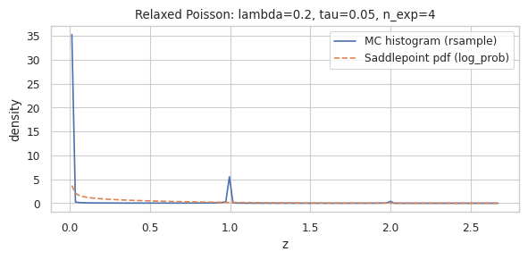
(lambda= 0.50, tau= 0.05) MC mean=0.5020, theory mean=0.5000 | MC var=0.4777, theory var=0.4750 | n_exp=6
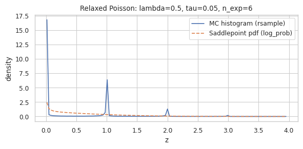
(lambda= 1.00, tau= 0.05) MC mean=0.9982, theory mean=1.0000 | MC var=0.9465, theory var=0.9500 | n_exp=8
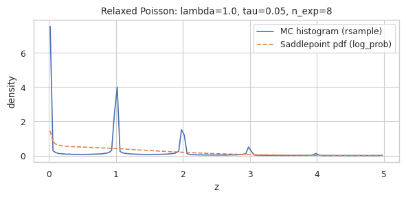
(lambda= 2.00, tau= 0.05) MC mean=1.9975, theory mean=2.0000 | MC var=1.8943, theory var=1.9000 | n_exp=10
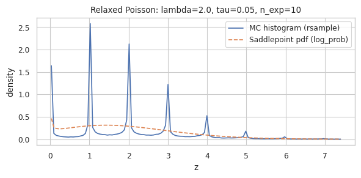
(lambda= 5.00, tau= 0.05) MC mean=5.0054, theory mean=5.0000 | MC var=4.7590, theory var=4.7500 | n_exp=17
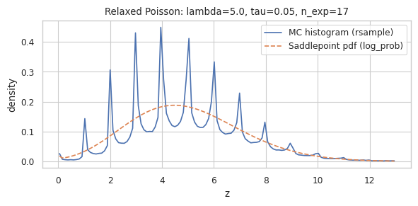
(lambda= 10.00, tau= 0.05) MC mean=9.9909, theory mean=10.0000 | MC var=9.4668, theory var=9.5000 | n_exp=26
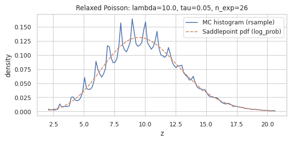
(lambda= 20.00, tau= 0.05) MC mean=19.9918, theory mean=20.0000 | MC var=18.9657, theory var=19.0000 | n_exp=42
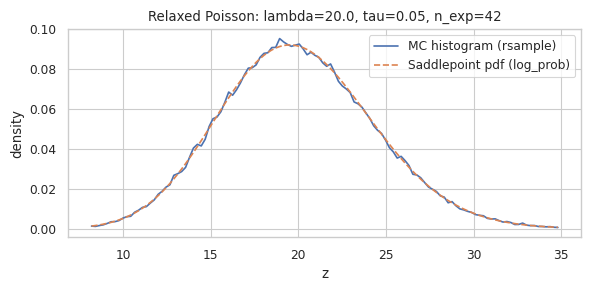
(lambda= 0.20, tau= 0.10) MC mean=0.1993, theory mean=0.2000 | MC var=0.1797, theory var=0.1800 | n_exp=4
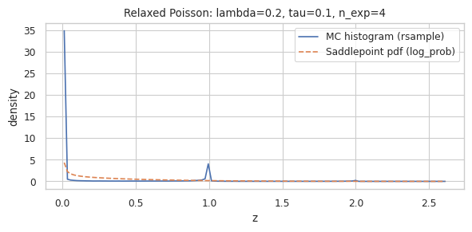
(lambda= 0.50, tau= 0.10) MC mean=0.4983, theory mean=0.5000 | MC var=0.4481, theory var=0.4500 | n_exp=6
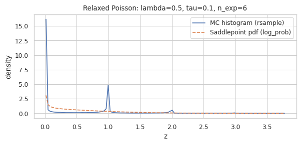
(lambda= 1.00, tau= 0.10) MC mean=1.0002, theory mean=1.0000 | MC var=0.8976, theory var=0.9000 | n_exp=8
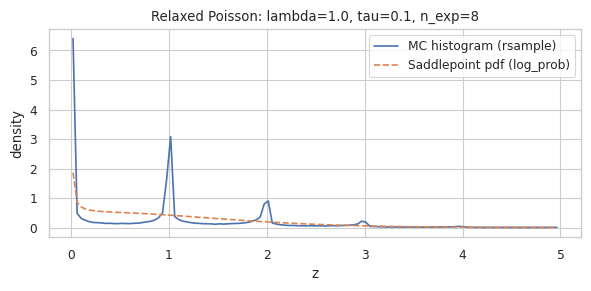
(lambda= 2.00, tau= 0.10) MC mean=1.9953, theory mean=2.0000 | MC var=1.8011, theory var=1.8000 | n_exp=10
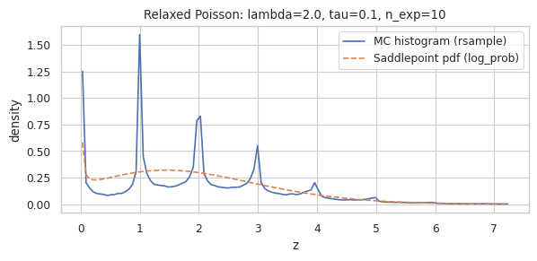
(lambda= 5.00, tau= 0.10) MC mean=5.0013, theory mean=5.0000 | MC var=4.4869, theory var=4.5000 | n_exp=17
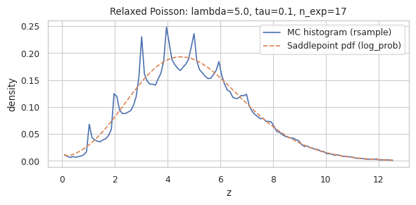
(lambda= 10.00, tau= 0.10) MC mean=9.9910, theory mean=10.0000 | MC var=9.0270, theory var=9.0001 | n_exp=26
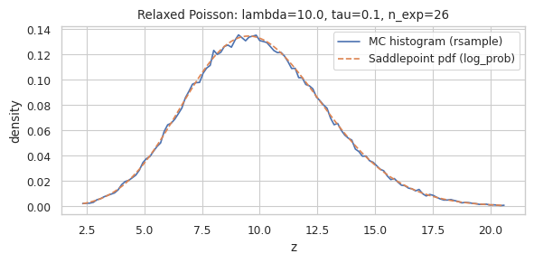
(lambda= 20.00, tau= 0.10) MC mean=20.0029, theory mean=20.0001 | MC var=17.9773, theory var=18.0002 | n_exp=42
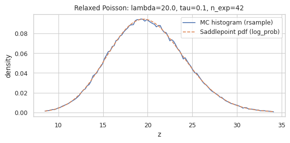
(lambda= 0.20, tau= 0.20) MC mean=0.2000, theory mean=0.2003 | MC var=0.1606, theory var=0.1605 | n_exp=4
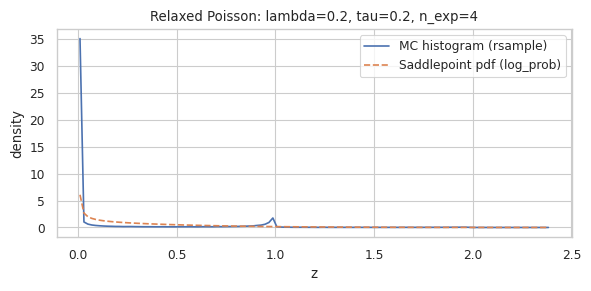
(lambda= 0.50, tau= 0.20) MC mean=0.5019, theory mean=0.5007 | MC var=0.4036, theory var=0.4013 | n_exp=6
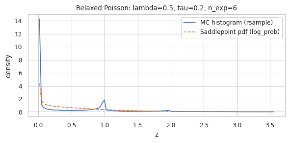
(lambda= 1.00, tau= 0.20) MC mean=1.0054, theory mean=1.0013 | MC var=0.8036, theory var=0.8027 | n_exp=8
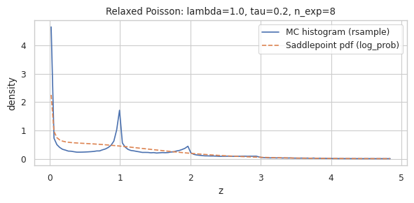
(lambda= 2.00, tau= 0.20) MC mean=2.0032, theory mean=2.0027 | MC var=1.6009, theory var=1.6054 | n_exp=10
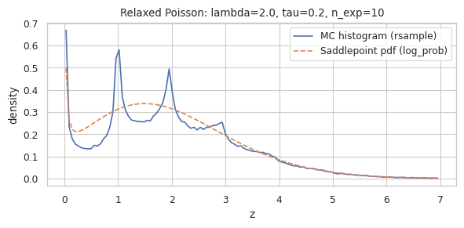
(lambda= 5.00, tau= 0.20) MC mean=5.0053, theory mean=5.0067 | MC var=4.0291, theory var=4.0134 | n_exp=17
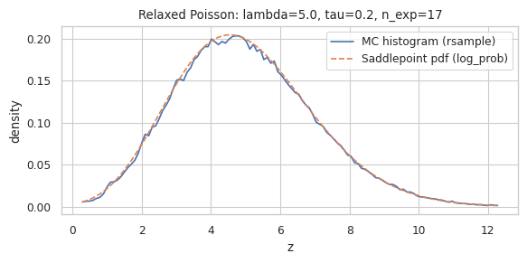
(lambda= 10.00, tau= 0.20) MC mean=9.9961, theory mean=10.0134 | MC var=7.9588, theory var=8.0268 | n_exp=26
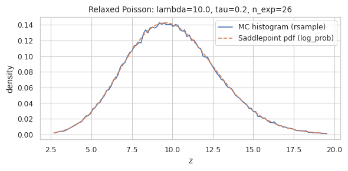
(lambda= 20.00, tau= 0.20) MC mean=19.9654, theory mean=20.0269 | MC var=15.5613, theory var=16.0536 | n_exp=42
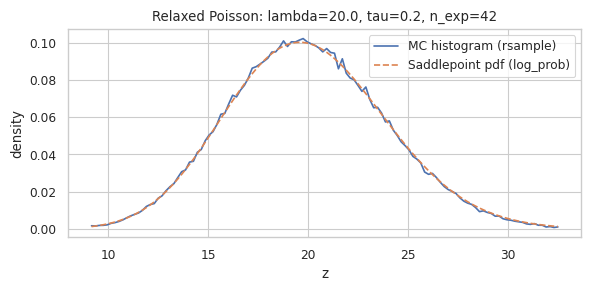
(lambda= 0.20, tau= 0.50) MC mean=0.2132, theory mean=0.2127 | MC var=0.1244, theory var=0.1246 | n_exp=4
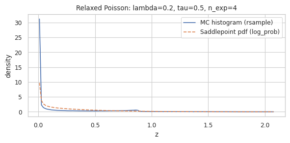
(lambda= 0.50, tau= 0.50) MC mean=0.5305, theory mean=0.5317 | MC var=0.3106, theory var=0.3115 | n_exp=6
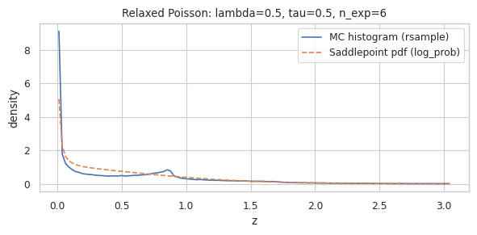
(lambda= 1.00, tau= 0.50) MC mean=1.0619, theory mean=1.0635 | MC var=0.6201, theory var=0.6231 | n_exp=8
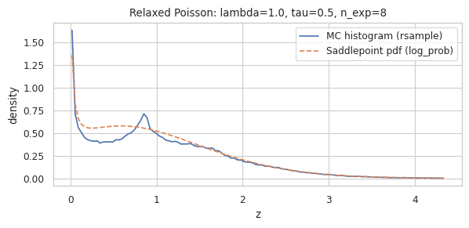
(lambda= 2.00, tau= 0.50) MC mean=2.1206, theory mean=2.1269 | MC var=1.2228, theory var=1.2461 | n_exp=10
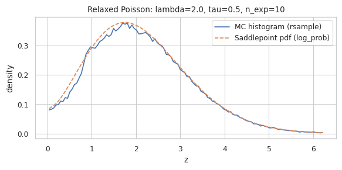
(lambda= 5.00, tau= 0.50) MC mean=5.2579, theory mean=5.3173 | MC var=2.8937, theory var=3.1153 | n_exp=17
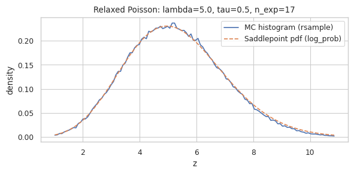
(lambda= 10.00, tau= 0.50) MC mean=10.3352, theory mean=10.6346 | MC var=5.1209, theory var=6.2307 | n_exp=26
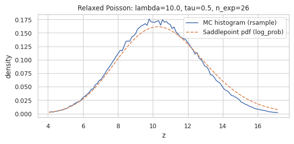
(lambda= 20.00, tau= 0.50) MC mean=20.0267, theory mean=21.2693 | MC var=8.4186, theory var=12.4613 | n_exp=42
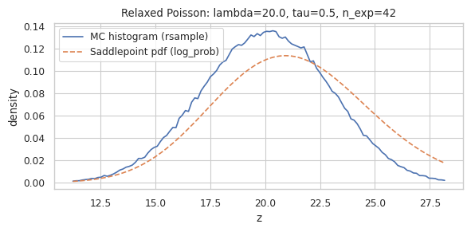
def exact_relaxed_poisson_log_prob(z, rate, temp, margin=1):
"""
Computes the rigorous log_prob using Local Inversion (Jacobian method).
Captures the U-shaped singularities at integers.
"""
# 1. Setup
if not isinstance(z, torch.Tensor): z = torch.tensor(z)
if not isinstance(rate, torch.Tensor): rate = torch.tensor(rate)
# Identify the dominant integer 'k'
k_base = z.floor()
# We sum densities over a small window of possible k's to account for overlap
# (though usually only k_base and k_base-1 matter)
shifts = torch.arange(-margin, margin + 1, device=z.device)
z_expanded = z.unsqueeze(0)
k_centers = z_expanded.floor() + shifts.view(-1, *([1] * z.dim()))
# 2. Fractional part 'u'
# u is the value in (0, 1) relative to the integer k
u = z_expanded - k_centers
# Numerical stability: we cannot evaluate logit(0) or logit(1).
# We clamp u strictly within (0, 1). The Jacobian correctly explodes here.
eps = 1e-6
u_clamped = u.clamp(min=eps, max=1-eps)
# 3. Invert the transformation to find implied Time 't'
# z = k + sigmoid((1 - t) / tau) => t = 1 - tau * logit(u)
logit_u = torch.logit(u_clamped)
t_implied = 1.0 - temp * logit_u
# 4. Compute the Jacobian term (The U-Shape)
# log|dT/dz| = log(tau) - log(u) - log(1-u)
log_jac = np.log(temp) - torch.log(u_clamped) - torch.log(1 - u_clamped)
# 5. Compute Gamma Log-Prob of the implied time
# T ~ Gamma(alpha=k+1, beta=rate)
k_safe = k_centers.clamp(min=0)
alpha = k_safe + 1
# Handle rate broadcasting
rate_expanded = rate.unsqueeze(0) if rate.dim() == z.dim() else rate
# We use the lgamma-based definition of Gamma log_prob manually or via distribution
# log P(t) = alpha*log(beta) - lgamma(alpha) + (alpha-1)*log(t) - beta*t
# (PyTorch Gamma uses concentration=alpha, rate=beta)
# Mask invalid paths:
# 1. k < 0 (impossible)
# 2. t <= 0 (causally impossible for this k)
# 3. u not in (0, 1) (z not in the active window of this k)
mask_valid = (k_centers >= 0) & (t_implied > 0) & (u > 0) & (u < 1)
# Compute Gamma term
gamma_term = (
alpha * torch.log(rate_expanded)
- torch.lgamma(alpha)
+ (alpha - 1) * torch.log(t_implied)
- rate_expanded * t_implied
)
# Combine terms
log_prob_components = gamma_term + log_jac
# Apply mask
log_prob_components = torch.where(mask_valid, log_prob_components, torch.tensor(-float('inf'), device=z.device))
# 6. Sum probabilities in log-space (Mixture of overlapping events)
total_log_prob = torch.logsumexp(log_prob_components, dim=0)
return total_log_prob
import torch
import torch.nn.functional as F
import numpy as np
def gaussian_mixture_log_prob(z, rate, temp, margin=10):
"""
Computes log_prob using a Gaussian Mixture approximation.
p(z) ~ Sum_k Poisson(k|rate) * Normal(z|loc=k, scale=temp)
This smoothes the singularities of the exact density, resulting in
stable gradients and a visual match to empirical histograms.
"""
# Ensure inputs are tensors
if not isinstance(z, torch.Tensor): z = torch.tensor(z)
if not isinstance(rate, torch.Tensor): rate = torch.tensor(rate)
# 1. Define window of integers k to sum over
# We sum over [floor(z)-margin, ..., floor(z)+margin]
shifts = torch.arange(-margin, margin + 1, device=z.device)
# Expand z for broadcasting: z_expanded [1, Batch, ...]
z_expanded = z.unsqueeze(0)
# k_centers: [2*margin+1, Batch, ...]
shifts_view = shifts.view(-1, *([1] * z.dim()))
k_centers = z_expanded.floor() + shifts_view
# 2. Compute Log-Weights (Poisson PMF)
# log P(k|lambda) = k*log(lam) - lam - lgamma(k+1)
k_safe = k_centers.clamp(min=0)
# Handle rate broadcasting
rate_expanded = rate.unsqueeze(0) if rate.dim() == z.dim() else rate
log_weights = (
k_safe * torch.log(rate_expanded)
- rate_expanded
- torch.lgamma(k_safe + 1)
)
# Mask invalid k (k < 0) with -inf
mask_valid = k_centers >= 0
log_weights = torch.where(mask_valid, log_weights, torch.tensor(-float('inf'), device=z.device))
# 3. Compute Log-Kernels (Gaussian PDF)
# Using Gaussian kernel with std = temp
# log N(z; k, temp) = -0.5 * ((z - k)/temp)^2 - log(temp) - 0.5 * log(2pi)
diff = z_expanded - k_centers
# We use temp as the standard deviation of the smoothing kernel
sigma = temp
log_kernels = -0.5 * (diff / sigma)**2 - np.log(sigma) - 0.5 * np.log(2 * np.pi)
# 4. Combine and Sum (LogSumExp)
# log p(z) = LogSumExp( log_weight + log_kernel )
total_log_prob = torch.logsumexp(log_weights + log_kernels, dim=0)
return total_log_prob
import math
import torch
import torch.nn.functional as F
from torch import distributions as dists
dists.Distribution.set_default_validate_args(False)
def compute_n_exp(rate: float, p: float = 1e-6):
assert rate > 0.0, f"must be positive, got: {rate}"
pois = sp_stats.poisson(rate)
n_exp = pois.ppf(1.0 - p)
return int(n_exp)
def softclamp_upper(x: torch.Tensor, c: float):
return c - F.softplus(c - x)
class _RelaxedPoissonFourierCache:
"""
Precomputes A(omega) = tau * ∫_0^{y0} (exp(i*omega*y) - 1) / (y(1-y)) dy
on an omega grid for a fixed temperature tau.
Then for each element with rate lambda:
K(i*omega) = lambda * A(omega)
pdf(z) ≈ (1/pi) ∫_0^{omega_max} exp(lambda*A_re) * cos(lambda*A_im - omega*z) d omega
"""
def __init__(
self,
tau: float,
device: torch.device,
n_omega: int = 2048,
omega_max: float | None = None,
omega_max_scale: float = 150.0, # heuristic: omega_max = omega_max_scale / tau
n_y_quad: int = 512,
y_quad_power: float = 4.0,
dtype: torch.dtype = torch.float64,
):
assert tau > 0.0
self.tau = float(tau)
self.device = device
self.dtype = dtype
if omega_max is None:
omega_max = omega_max_scale / self.tau
self.n_omega = int(n_omega)
self.omega_max = float(omega_max)
self.n_y_quad = int(n_y_quad)
self.y_quad_power = float(y_quad_power)
self._build_omega_grid()
self._build_y_quadrature()
self._precompute_A()
def _build_omega_grid(self):
# omega in [0, omega_max], trapezoid weights
w = torch.linspace(
0.0, self.omega_max, steps=self.n_omega,
device=self.device, dtype=self.dtype
)
dw = w[1] - w[0]
trap = torch.ones_like(w)
trap[0] = 0.5
trap[-1] = 0.5
self.omega = w # [M]
self.dw = dw
self.trap = trap # [M]
def _build_y_quadrature(self):
tau = torch.tensor(self.tau, device=self.device, dtype=self.dtype)
y0 = torch.sigmoid(1.0 / tau) # scalar
self.y0 = y0
N = self.n_y_quad
p = self.y_quad_power
u = (torch.arange(N, device=self.device, dtype=self.dtype) + 0.5) / N # midpoint
y = y0 * (1.0 - (1.0 - u).pow(p))
dy_du = y0 * p * (1.0 - u).pow(p - 1.0)
w = dy_du * (1.0 / N)
self.y = y # [N]
self.wy = w # [N]
def _precompute_A(self):
"""
Compute A_re(omega), A_im(omega) on omega grid.
A(omega) = tau ∫ (e^{i omega y} - 1)/(y(1-y)) dy
"""
tau = torch.tensor(self.tau, device=self.device, dtype=self.dtype)
y = self.y[:, None] # [N,1]
wy = self.wy[:, None] # [N,1]
om = self.omega[None, :] # [1,M]
denom = y * (1.0 - y) # [N,1]
phase = om * y # [N,M]
# (cos + i sin) - 1
num_re = torch.cos(phase) - 1.0
num_im = torch.sin(phase)
integrand_re = num_re / denom
integrand_im = num_im / denom
A_re = tau * torch.sum(wy * integrand_re, dim=0) # [M]
A_im = tau * torch.sum(wy * integrand_im, dim=0) # [M]
self.A_re = A_re
self.A_im = A_im
def log_pdf(self, z: torch.Tensor, lam: torch.Tensor, eps: float = 1e-30):
"""
Vectorized log pdf for z with elementwise lambda (same shape), using CF inversion.
z: [...], lam: [...]
returns: log p(z) with same shape
"""
z64 = z.to(dtype=self.dtype)
lam64 = lam.to(dtype=self.dtype)
# Broadcast omega grid against z and lambda:
# omega: [M,1,1,...], A_re/A_im: [M,1,1,...]
# z/lam: [1,...]
om = self.omega.view(-1, *([1] * z64.ndim))
A_re = self.A_re.view(-1, *([1] * z64.ndim))
A_im = self.A_im.view(-1, *([1] * z64.ndim))
trap = self.trap.view(-1, *([1] * z64.ndim))
# integrand = exp(lam*A_re) * cos(lam*A_im - omega*z)
expo = torch.exp(lam64[None, ...] * A_re)
arg = lam64[None, ...] * A_im - om * z64[None, ...]
integrand = expo * torch.cos(arg)
# trapezoid integration on [0, omega_max]
integral = torch.sum(trap * integrand, dim=0) * self.dw
pdf = integral / math.pi
pdf = torch.clamp(pdf, min=eps)
return torch.log(pdf).to(dtype=z.dtype)
class Poisson:
_fourier_cache = {} # keyed by (device, tau, n_omega, omega_max, omega_max_scale, n_y_quad, y_quad_power, dtype)
def __init__(
self,
log_rate: torch.Tensor,
temp: float = 0.0,
clamp: float | None = None,
n_exp: int | str = "infer",
n_exp_p: float = 1e-3,
# log_prob control
log_prob_method: str = "fourier", # "fourier" | "saddlepoint" | "none"
# fourier settings
fp_n_omega: int = 2048,
fp_omega_max: float | None = None,
fp_omega_max_scale: float = 150.0,
fp_n_y_quad: int = 512,
fp_y_quad_power: float = 4.0,
fp_dtype: torch.dtype = torch.float64,
):
assert temp >= 0.0, f"must be non-neg: {temp}"
self.temp = float(temp)
self.clamp = clamp
self.log_prob_method = str(log_prob_method)
# setup rate & exp dist
if clamp is not None:
log_rate = softclamp_upper(log_rate, clamp)
eps = torch.finfo(torch.float32).eps
self.rate = torch.exp(log_rate) + eps
self._exp = dists.Exponential(self.rate)
# compute n_exp for sampling
if n_exp == "infer":
max_rate = self.rate.max().item()
n_exp = compute_n_exp(max_rate, n_exp_p)
self.n_exp = int(n_exp)
# build or reuse Fourier cache if needed
self._fp_cache = None
if self.temp > 0.0 and self.log_prob_method == "fourier":
key = (
str(self.rate.device),
float(self.temp),
int(fp_n_omega),
None if fp_omega_max is None else float(fp_omega_max),
float(fp_omega_max_scale),
int(fp_n_y_quad),
float(fp_y_quad_power),
str(fp_dtype),
)
if key not in Poisson._fourier_cache:
Poisson._fourier_cache[key] = _RelaxedPoissonFourierCache(
tau=self.temp,
device=self.rate.device,
n_omega=fp_n_omega,
omega_max=fp_omega_max,
omega_max_scale=fp_omega_max_scale,
n_y_quad=fp_n_y_quad,
y_quad_power=fp_y_quad_power,
dtype=fp_dtype,
)
self._fp_cache = Poisson._fourier_cache[key]
def rsample(self):
if self.temp == 0.0:
return self.sample()
x = self._exp.rsample((self.n_exp,)) # inter-event times
times = torch.cumsum(x, dim=0) # arrival times
indicator = torch.sigmoid((1 - times) / self.temp)
z = indicator.sum(0).float()
return z
@torch.no_grad()
def sample(self):
return torch.poisson(self.rate).float()
def log_prob(self, samples: torch.Tensor):
if self.temp == 0.0:
return (-self.rate - torch.lgamma(samples + 1) + samples * torch.log(self.rate))
if self.log_prob_method == "fourier":
# continuous log pdf (approx, numeric inversion)
# support is z > 0 in practice; clamp for safety
z = torch.clamp(samples, min=1e-8)
return self._fp_cache.log_pdf(z=z, lam=self.rate)
if self.log_prob_method == "none":
raise RuntimeError("log_prob undefined for temp>0 when log_prob_method='none'")
raise ValueError(f"Unknown log_prob_method: {self.log_prob_method}")
import math
import torch
import matplotlib.pyplot as plt
@torch.no_grad()
def test_relaxed_poisson_fourier(
lambdas=(0.2, 0.5, 1.0, 2.0, 5.0),
temps=(0.01, 0.02, 0.05, 0.1, 0.2),
n_samples=200_000,
n_exp="infer",
n_exp_p=1e-6, # tighten truncation so rsample better matches infinite-process target
device="cpu",
seed=0,
):
torch.manual_seed(seed)
for tau in temps:
for lam in lambdas:
log_rate = torch.full((n_samples, 1), math.log(lam), device=device)
dist = Poisson(
log_rate=log_rate,
temp=float(tau),
n_exp=n_exp,
n_exp_p=float(n_exp_p),
log_prob_method="fourier",
# Fourier resolution knobs; for small tau, bump omega grid
fp_n_omega=4096 if tau <= 0.02 else 2048,
fp_omega_max_scale=200.0, # higher makes sharper peaks but costs more
fp_n_y_quad=768 if tau <= 0.02 else 512,
fp_y_quad_power=4.0,
)
z = dist.rsample().squeeze(-1) # [n_samples]
# choose plot window
z_sorted = torch.sort(z).values
lo = z_sorted[int(0.001 * n_samples)].item()
hi = z_sorted[int(0.999 * n_samples)].item()
# histogram density
n_bins = 200
hist = torch.histc(z, bins=n_bins, min=lo, max=hi)
edges = torch.linspace(lo, hi, steps=n_bins + 1, device=device)
centers = 0.5 * (edges[:-1] + edges[1:])
bw = (hi - lo) / n_bins
hist_density = (hist / (hist.sum() * bw)).cpu().numpy()
centers_np = centers.cpu().numpy()
# evaluate pdf on grid
grid_log_rate = torch.full((n_bins, 1), math.log(lam), device=device)
dist_grid = Poisson(
log_rate=grid_log_rate,
temp=float(tau),
n_exp=dist.n_exp,
log_prob_method="fourier",
fp_n_omega=dist._fp_cache.n_omega,
fp_omega_max=dist._fp_cache.omega_max,
fp_n_y_quad=dist._fp_cache.n_y_quad,
fp_y_quad_power=dist._fp_cache.y_quad_power,
)
logpdf = dist_grid.log_prob(centers[:, None]).squeeze(-1)
pdf = torch.exp(logpdf).cpu().numpy()
plt.figure()
plt.title(f"lambda={lam}, tau={tau}, n_exp={dist.n_exp}")
plt.plot(centers_np, hist_density, label="MC (rsample)")
plt.plot(centers_np, pdf, linestyle="--", label="Fourier-inverted pdf")
plt.xlabel("z")
plt.ylabel("density")
plt.legend()
plt.tight_layout()
plt.show()
test_relaxed_poisson_fourier(
lambdas=(0.2, 0.5, 1.0, 2.0, 5.0),
temps=(0.01, 0.02, 0.05, 0.1, 0.2),
n_samples=200_000,
n_exp="infer",
n_exp_p=1e-6,
device="cpu",
seed=0,
)
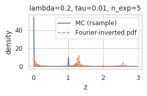
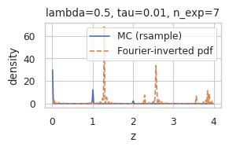
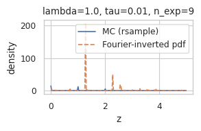
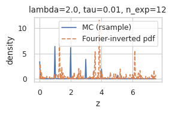
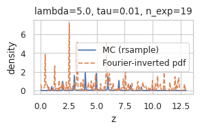
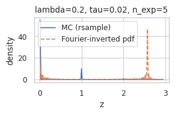
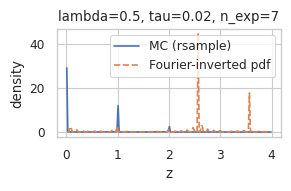
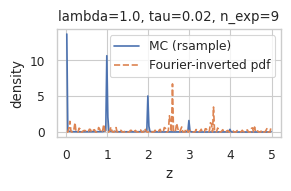
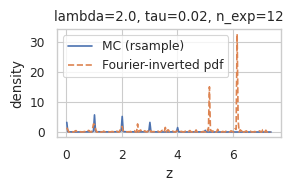
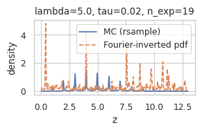
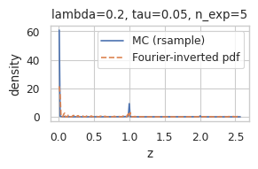
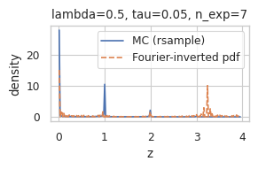
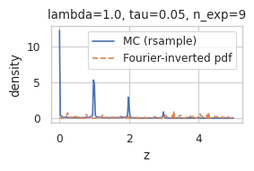
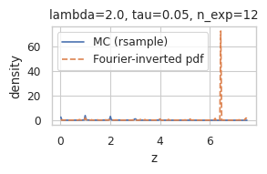
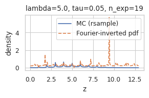
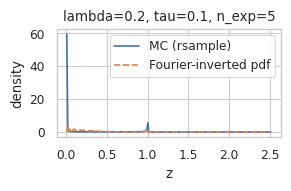
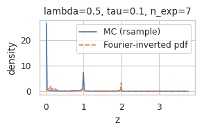
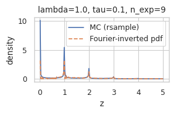
t = 0.1
x = torch.linspace(-4, 4, 1000)
y = torch.sigmoid(x)
plot(x, y)
[<matplotlib.lines.Line2D at 0x77c8d47916d0>]